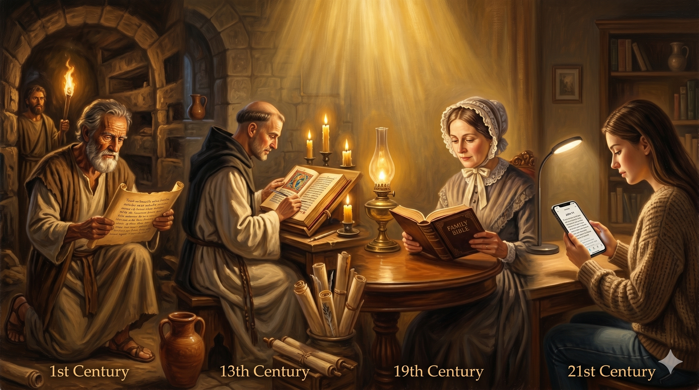

밧모 섬의 촛불 아래, 백발의 노년 요한이 양피지 위에 마지막 문장을 써 내려가는 장면 — 떨리는 손이지만 확고한 눈빛으로 펜을 쥔 채 "믿게 하려 함이라"는 단어를 완성하고 있으며, 창밖에는 에게 해의 새벽이 밝아오고 있다
"오직 이것을 기록함은 너희로 예수께서 하나님의 아들 그리스도이심을 믿게 하려 함이요 또 너희로 믿고 그 이름을 힘입어 생명을 얻게 하려 함이니라" — 요한복음 20:31
요한복음의 마지막 선언입니다. 요한은 이 복음서를 왜 썼는지 스스로 밝힙니다. "믿게 하려 함이요." 세베대의 아들, 우레의 아들이라는 별명을 가졌던 젊은 어부가, 사마리아에 불을 내리자고 외쳤던 혈기의 청년이, 예수님 품에 기대어 누웠던 그 제자가, 마지막 사도로 남아 요한복음과 세 통의 편지와 요한계시록을 기록했습니다. 그 모든 글의 목적은 단 하나였습니다. "너희로 믿게 하려 함이라." 자신의 경험과 지식을 과시하기 위함이 아니라, 독자들이 예수를 그리스도로 믿고 생명을 얻게 하기 위함이었습니다.
요한이 본 것은 많았습니다. 변화산의 영광, 최후의 만찬에서 예수님의 품, 십자가 아래의 오후, 빈 무덤 앞의 새벽, 밧모 섬에서의 계시. 그 모든 직접 목격의 경험이 그를 기록자로 만들었습니다. 그러나 그가 기록을 남긴 이유는 '내가 이것을 보았다'는 자랑이 아니라 '당신도 믿을 수 있다'는 초대였습니다. 이것이 요한의 사랑입니다. 자신이 경험한 은혜를 혼자 누리지 않고, 기록으로 남겨 2000년 후의 독자들까지 그리스도께 이끄는 사랑의 사도.

시대와 대륙을 초월하여 요한복음을 읽는 사람들의 모습 — 초대 성도, 중세 수도사, 현대 청년, 노인이 각각 다른 시대 다른 장소에서 같은 말씀을 붙들고 있는 이미지, "믿게 하려 함이라"는 목적이 2000년을 이어온 것을 보여줌
요한은 목격자였습니다. 우리는 그의 기록을 통해 믿는 자들입니다. 예수님은 도마에게 말씀하셨습니다. "보지 못하고 믿는 자들은 복되도다." 요한이 우리를 위해 모든 것을 기록했기에, 우리는 보지 않고도 믿을 수 있습니다. 이 복음은 우리가 받은 선물입니다. 그러나 선물은 나눠질 때 완성됩니다. 요한이 기록하여 우리에게 전한 것처럼, 우리도 우리가 경험한 은혜를 다음 세대에 전달해야 합니다.
요한은 우레의 아들에서 사랑의 사도로 변화되었습니다. 불을 내리자고 외치던 사람이 "하나님은 사랑이라"고 선언하는 사람이 되었습니다. 이 변화는 예수님과의 동행이 만들어 낸 것입니다. 우리도 마찬가지입니다. 지금 우리의 성격, 우리의 모습이 전부가 아닙니다. 예수님과 함께 걷는 긴 여정이 우리를 빚어갑니다. 요한처럼, 우리의 마지막 이야기도 사랑으로 마무리될 수 있습니다.
요한은 자신이 본 것을 당신이 믿게 하려고 기록했습니다.
당신이 경험한 은혜는 누군가에게 전달되고 있습니까?
받은 복음은 흘러가야 합니다.